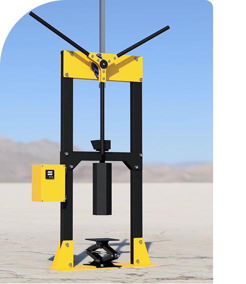

La Low-tech au service de l'Écologie.
Découvrez comment nos machines de production transforment les déchets en opportunités pour notre planète.

Découvrez comment nos machines de production transforment les déchets en opportunités pour notre planète.
Chez Krysto, chaque produit a une histoire à raconter. Notre processus commence par la collecte de déchets plastiques localement sourcés. Ces déchets sont ensuite triés, nettoyés et transformés dans nos ateliers. Le résultat ? Des objets design et éco-responsables qui donnent une seconde vie aux matériaux et contribuent à un monde plus propre.
Pour commencer, nous avons besoin de déchets plastiques. Nous les collectons localement auprès d'associations comme Les Bouchons d'Espoir, de collectivités locales ou de nos clients pour des projets sur-mesure.
Dès la réception de la matière, nous la trions par type de plastique, puis par couleur.
Par la suite, le plastique est broyé en paillettes afin de pouvoir être intégré à notre processus de transformation.

Nous arrivons enfin à l'étape la plus importante : l'injection. Chauffé, le plastique est fondu puis injecté dans un moule en aluminium pour être transformé en un bel objet utile et durable.